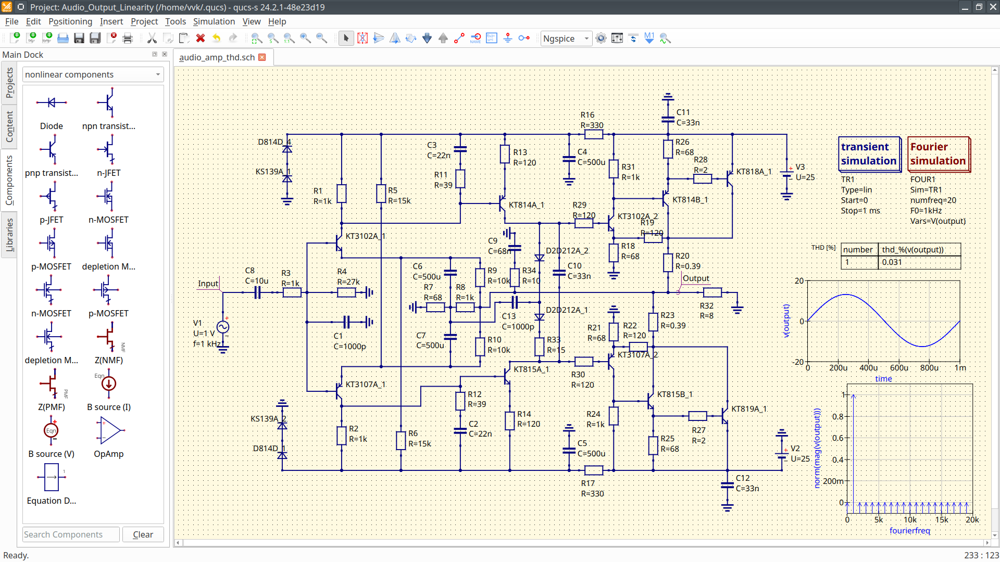

Qucs-S: Qucs with SPICE
Download links
The latest stable release is Qucs-0.0.21. It is based on stable Qucs-0.0.19:
(Installation instructions...)
Contibuition guide
Qucs-S is open for everyone's contribution. See here for contribution guide.
|
News
- January, 19, 2020 Qucs-S-0.0.22 is released! See
Release notes and dowload link
- October, 31, 2018 Qucs-S-0.0.21 is released! See
Release notes and dowload link
- June, 24, 2018 Added packages for Ubuntu 18.04
- October, 31, 2017 Qucs-S-0.0.20 is released! See
Release notes and dowload link
- October, 25, 2017 Added packages for CentOS and Fedora
- January, 26, 2017 Qucs-S 0.0.19 is released! The first stable release.
Release announcement
- November 8, 2016 Qucs-S RC8 released.
Release notes and download link
- September 3, 2016 Qucs-S RC7 released.
Release notes and download link
- May 15, 2016 Qucs-S RC6 released.
Release notes and download link
- March 23, 2016 Qucs-S RC5 released.
Release notes and download link
- January 31, 2016 Qucs-S RC4 released.
Release notes and download link
- August 29, 2015 Qucs-S RC3 released.
- July 28, 2015 Qucs-S RC2 released.
- July 25, 2015 Qucs-S RC1 released.
|
Simulation example with Qucs-S and Ngspice

(More screenshots...)
Publications
Qucs-S is also a research software. Check our publication list.
|
What is Qucs-S?
Qucs-S is a spin-off of the Qucs
cross-platform circuit simulator. "S" letter indicates SPICE. The purpose of
the Qucs-S subproject is to use free SPICE circuit simulation kernels with
the Qucs GUI. It merges the power of SPICE and the simplicity of the Qucs GUI.
Qucs intentionally uses its own SPICE incompatible simulation kernel Qucsator.
It has advanced RF and AC domain simulation features, but most of the existing
industrial SPICE models are incompatible with it.
Qucs-S is not a simulator by itself, but it requires to use a simulation backend
with it. The schematic document format of Qucs and Qucs-S are fully compatible.
Qucs-S allows to use the following simulation kernels with it:
- Ngspice is recommended to use.
Ngspice is powerful mixed-level/mixed-signal circuit simulator. The
most of industrial SPICE models are compatible with Ngspice. It has an
excellent performance for time-domain simulation of switching circuits
and powerful postprocessor.
- XYCE is a new SPICE-compatible
circuit simulator written by Sandia from the scratch. It supports basic
SPICE simulation types and has an advanced RF simulation features such
as Harmonic balance simulation.
- SpiceOpus is developed by the Faculty of
Electrical Engineering of the Ljubljana University. It based on the
SPICE-3f5 code
- Qucsator as backward compatible
Screenshots
- MOSFET power switch
|
- JFET mixer

|
- Single-ended tube amplifier

|
- Hi-Fi bipolar transistor audio amplifier

|
(to top...)
Main features
- Backward compatible with Qucs by the component types and simulations
- Direct support of SPICE models from components datasheets. SPICE
model could be added to schematic without any adaptation.
- Basic SPICE components: RCL, BJT, MOSFET, JFET, MESFET, switches;
- Advanced SPICE components: Equation-defined sources and RCLs, transmission lines;
- Direct support of SPICE Modelcards, SPICE sections (.IC, .NODESET);
- Parametric circuits (.PARAM) and SPICE postrprocessor (Nutmeg)
- Basic SPICE simulations: DC, AC, TRAN;
- Advanced SPICE simulation: DISTO, NOISE, SENS (added in 0.0.20), Spectrum analysis;
- Single-tone and Multitone Harmonic balance analysis with XYCE
backend;
- Nutmeg script simulation: direct access to the SPICE code and
construct your own simulation;
- XYCE script simulation type;
- XYCE digital devices library;
- XSPICE CodeModel synthesizer;
- User mathematical functions definitions with .FUNC (added in 0.0.20);
Installation
Linux
Debian repository
Debian(7,8, and 9) and Ubuntu(14.04 and 16.04) repositories are available for Qucs-S. Packages are
built with automatic Open Build Service (OBS) tool from OpenSUSE team.
Go to download
repository
You need to perform the following steps to add this repository in system (for
Debian 9). For othe distributions simple replace the URLs.
- Download GPG key:
wget -c
http://download.opensuse.org/repositories/home:/ra3xdh/Debian_9.0/Release.key
- Add the following line to /etc/apt/sources.list:
deb http://download.opensuse.org/repositories/home:/ra3xdh/Debian_9.0/ ./
-
- Import key and update repos:
apt-key add Release.key
apt-get update
- Install Qucs-S
apt-get install qucs-s
If you have problems with adding repository in your system you can download and
install the *.deb package manually with dpkg:
dpkg -i qucs-s-0.0.19S_amd64.deb
You may need to install the following dependencies: lib4qt4-qt3support,
ibqt4-svg, ngspice
RPM packages for CentOS and Fedora
You need to simple add reposotries using the yum package manager. Let's consider
example for CentOS:
Building from source
If binary packages are not available for your distrubution, then you will need
to build Qucs-S from source:
- Install all necessary dependencies: Qt, C++ compilers, etc.
- Install desired simulation backends: Ngspice, XYCE, SpiceOpus. You can use all
these backends together or only one of them. Install basic Qucs (0.0.18 or
newer) if Qucsator is needed.
- Download and unpack tarball
- Use CMake to compile. Autotools doesn't support this installation mode and
will not work!
- Invoke make and make install
The complete command sequence to build Qucs-S is following:
tar xvfz qucs-s-0.0.21.tar.gz
cd qucs-s-0.0.21
mkdir builddir
cd builddir
cmake ..
make
make install
The last command make install should be executed from root user. It will
install Qucs-S into default prefix /usr/local/. Use -DCMAKE_INSTALL_PREFIX=...
to override the default locationNo additional configure options are needed now.
Slackware SlackBuild
Slack Build script is available for Slackware distribution. It will download and
compile Qucs-S automatically. You will obtain the binary Qucs-S package. Perform
the following steps to install Qucs-S:
- Clone this repository:
git clone https://github.com/ra3xdh/QucsS.SlackBuild
- Run SlackBuild as root:
cd QucsS.S.SlackBuild
./qucs-S.SlackBuild
- Install txz package with installpkg command
Windows
You need to use binary installer for Windows. You need to download and install
Ngspice and/or XYCE manually from official websites: http://ngspice.org/
https://xyce.sandia.gov respectively.
Important note for Ngspice on Windows: Unpack Ngspice ZIP package strictly to the
C:\SPICE location. Otherwise XSPICE model will not work! If you are getting strange errors with Ngspice
on Windows and cannot ot simulate even simple circuit, please check that Ngspice is installed strictly in
C:\SPICE . All Ngspice packages including offcial should be installed in a such way.
It's recommended special build of Ngspice-26 for Windows
Ngspice26_QucsS.zip
. Default Ngspice package also will work but it may have some limitation. Custom
Ngspice build solves the following issues:
- Windows GUI of Ngspice is disabled. It allows Qucs-S to obtain logs from
Ngspice.
- Added CMPP preprocessor and C headers set mandatory for development of
CodeModel libraries. Default Ngspice build is shipped without it.
Usage
Linux
Run qucs-s from the the command line or launch Qucs-S icon in your desktop
environment menu after the installation. You will need to select default simulation
backend at the first run. You can change it later in the application settings.
Windows
Launch Qucs-S in the system Start menu. You will also need to select default
simulator on the first application start. You will need to set default simulator
at the first run. Correct simulator paths setting is necessary for Windows.
(to top...)
Authors
Contribution guide
Steps to contribute
Source code of the Qucs-S is hosted at the Github in the following repository:
https://github.com/ra3xdh/qucs_s. You
need to clone this repository if you wish to contribute.
git clone -b current https://github.com/ra3xdh/qucs_s
cd qucs_s
git checkout -b your_feature
Use CMake to compile Qucs-S. After you make changes, prepare a
pull request to Qucs-S repository.
Branching model
Currently there are two main branches in my home Qucs repository:
- master is release candidate for the next Qucs-S release.
This branch provides side-by-side installation of Qucs and Qucs-S. Main application
executable is named to qucs-s. Only CMake is supported.
- current is development branch. Use this branch to target patches.
It uses traditional Qucs build system. There may exist some experimental branches forked form
this branch. I merge current into master time to time.
Release tarball is obtained from master with some
Bash script.
I distribute only Qucs-GUI and some utilities with Qucs-S package.
My changes only concentrated on GUI side, and you need to rebuild GUI only to test Qucs-S. You may
take Qucsator from usual Qucs installation.
Build instruction (development branches)
For qucs-s-stable you need to set WITH_SPICE cmake key. Autotools will not work. Perform
the following commnads to build all:
git clone https://github.com/ra3xdh/qucs_s/
cd qucs_s
mkdir build
cd build
cmake .. -DCMAKE_INSTALL_PREFIX=/some_path
make
Then install and launch qucs-s executable.
(to top...)
Documentation
Publications
Qucs-S is not a simple circuit simulator, but also a research software. Please
cite our articles, if you are using Qucs-S in your research.
- Brinson, M. E., and Kuznetsov, V. (2016) A new approach to compact semiconductor device modelling with Qucs Verilog-A analogue module synthesis. Int. J. Numer. Model., 29: 1070-1088. (BibTeX)
- D. Tomaszewski, G. Głuszko, M. Brinson, V. Kuznetsov and W. Grabinski, "FOSS as an efficient tool for extraction of MOSFET compact model parameters," 2016 MIXDES - 23rd International Conference Mixed Design of Integrated Circuits and Systems, Lodz, 2016, pp. 68-73. (BibTeX)
- M. Brinson and V. Kuznetsov, "Qucs-0.0.19S: A new open-source circuit simulator and its application for hardware design," 2016 International Siberian Conference on Control and Communications (SIBCON), Moscow, 2016, pp. 1-5. (BibTeX)
- M. Brinson and V. Kuznetsov, "Improvements in Qucs-S equation-defined modelling of semiconductor devices and IC's," 2017 MIXDES - 24th International Conference "Mixed Design of Integrated Circuits and Systems, Bydgoszcz, 2017, pp. 137-142.
(BibTeX)
- M. Brinson and V. Kuznetsov, "Extended behavioural device modelling and circuit simulation with Qucs-S" International Journal of Electronics, 2017, pp.1 - 14
(BibTeX)
{kind=link}